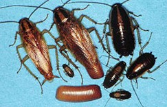
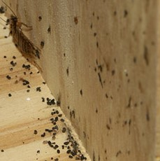

German Roaches

The German cockroach is one of the most common roaches found in apartment houses, restaurants, and hotels. German cockroaches (eggs included), are brought inside or hitchhike on man's belongings, luggage, boxes or packages. A large German roach population will produce a foul odor. These roaches prefer moisture, food, and warmth. Sanitation measures are critical in controlling German roaches.
Inspection

When inspecting for German cockroaches, thoroughness is very important. It is important to place the baits and IGR's or insecticides as close to their runways and harborages as possible.
Their excrement looks like black pepper.
Sanitation Procedures
- 1. Remove indoor trash or keep them emptied.
- 2. Keep trash dumpsters clean.
- 3. Make sure food is not left in sink stainers and frequently run the garbage disposal.
- 4. Food containers should be sealed.
- 5. Keep dishes clean, no residue of food remaining.
- 6. All kitchen appliances (microwaves, toasters, ovens, refrigerators and stoves) should be maintained in a clean condition so that it is food free and grease free.
- 7. All pet food needs to be picked up.
- 8. No food left out in the open.
- 9. Sweeping or vacuuming of any food particles or crumbs.
- 10. Get rid of empty soft drink bottles, paper bags and cardboard boxes.